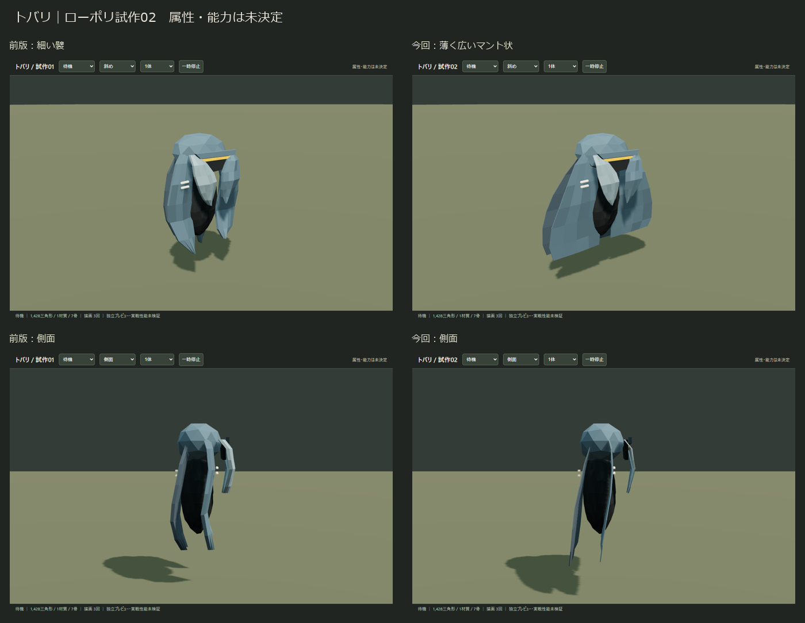
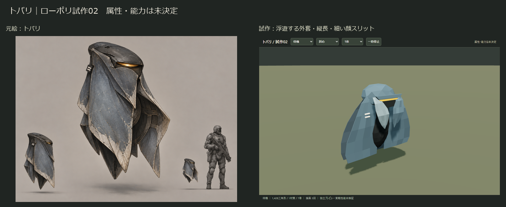
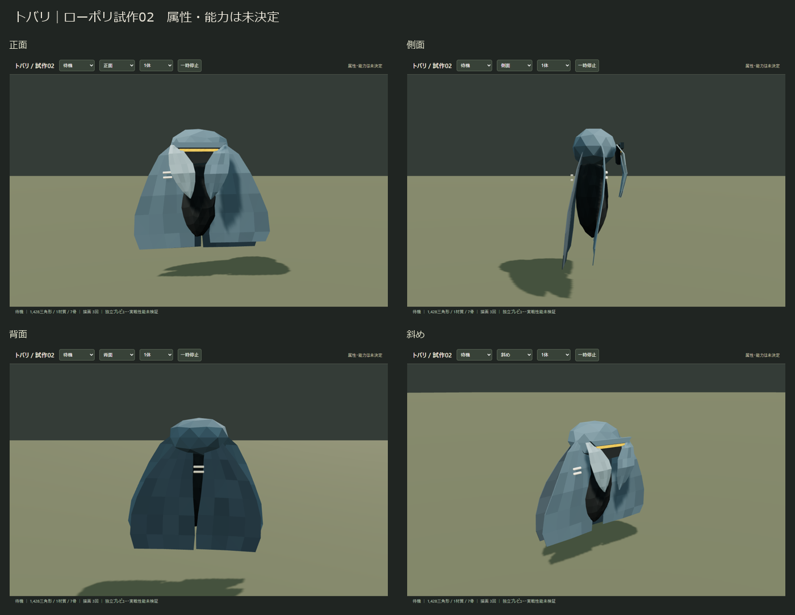
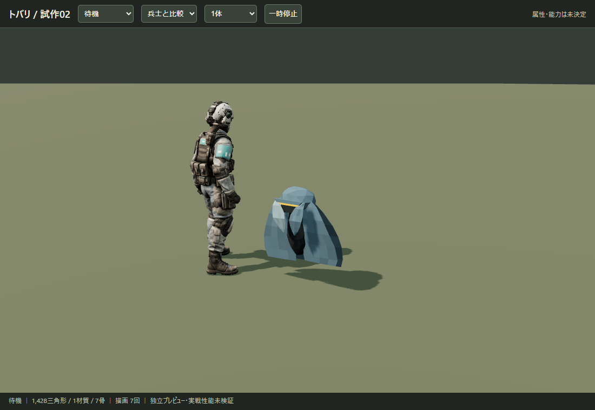
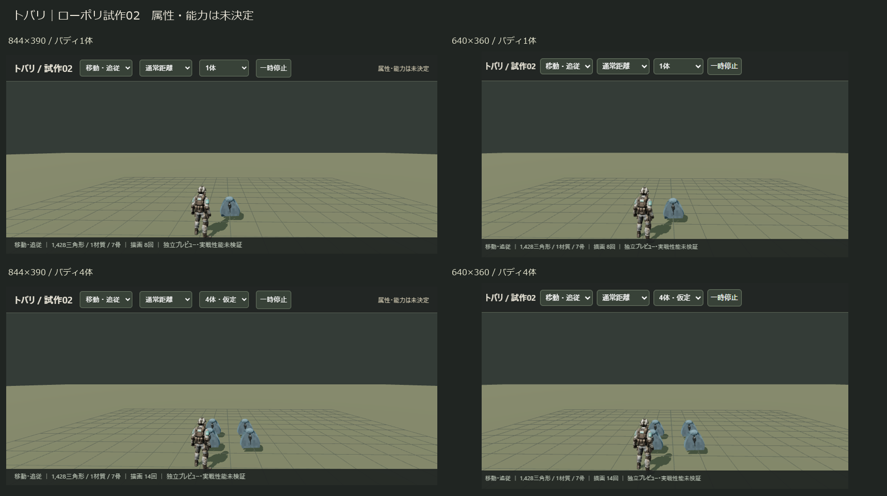

浮遊する外套形、縦長の輪郭、細い琥珀の顔スリット。青灰色の大きな面に整理しました。属性・能力は未決定です。
1,428三角形／1材質／7骨／テクスチャなし。編集用Blender・ゲーム用GLB・独立プレビュー・検証と引継ぎ
面の厚さを18mmから4mmへ、幅を0.54mから0.82mへ変更。裾を広げ、丸い膨らみを抑えました。


浮遊しながら周囲を見る → 前傾して追従 → 襞を開いて構える → 側面。経路や能力処理は含みません。



製品の画角・距離に準じた独立シーン。4体は4人各1体の仮定です。実スマホ・実戦性能は未確認です。